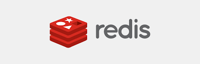
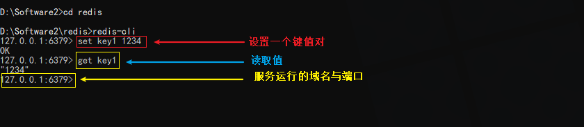

# redis
Key-Value形式的内存数据库。 主要用于保存 sesion。

# 1、安装
（1）win10 环境下安装
下载地址: https://github.com/tporadowski/redis/releases。
下载解压后，终端打开此的目录，运行以下命令可以启动 。
redis-server.exe redis.windows.conf
{kind=link}
（2）docker 安装
redis-text:
image: "redis"
restart: always
container_name: "redis_test"
ports:
- 10051:6379 # 映射端口
volumes:
- /home/redistest:/data # 映射目录
command: ["redis-server", "--requirepass", "123456"]
注意
Linux 系统中需要开放对应的端口！
# 2、使用
推荐一个查询命令的文档：http://doc.redisfans.com/ (opens new window)。
（1）win10中使用
不要关闭 redis 运行的 cmd 窗口（上图中的中端），打开另一个窗口,进入下载 redis 目录输入：
redis cli
设置一个键值对:
// 键名 键值
set key1 123
读取存储的值:
get key1

（2）docker 中使用
启动之后，使用以下命令进入交互模式：
docker exec -it [容器名] bash
redis cli
# 或
docker exec it [容器名] redis cli
使用密码登录使用
# 使用密码登录
auth 1234567
# 存值
set num 7
# 取值
get num
# 退出交互式窗口
quit
（3）常用命令
INCR ：使用此命令数据 +1 操作
DECR ：使用此命令数据 - 1 操作
EXISTS：查询一个 key 是否存在
set num 10
INCE num
# num 变成 11
DECR num
# num 变成 10
# 3、redis 连接 Node.js
先启动 redis 服务（图1中的窗口不要关闭），初始化一个项目。
npm init -y
npm i redis --save // 安装 redis
创建 app.js 项目入口
const redis = require('redis')
// 配置
const REDIS_OPTIONS = {
host: '127.0.0.1', # 服务器地址
port: 1500, # 端口
password: '1234567',
detect_buffers: true,
}
// 创建客户端
const redisClient = redis.createClient(REDIS_OPTIONS)
// 错误处理
redisClient.on('error', err => {
console.log(err)
})
redisClient.set('key1', '1234', redis.print)
redisClient.get('key1', (err, val) => {
if(err){
console.log(err)
}
console.log(val)
// 退出
redisClient.quit()
})
再次目录下运行
node .\app.js
输出以下内容：
Reply: OK
1234
← MongoDB Nginx 基本使用 →